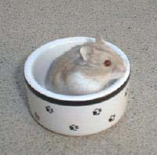

| Moscow Color Overview |
| I have included multiple pages on what I am currently calling the Moscow color. These pages detail the research and matings I have done so far. I will progressively update the pages to reflect the additional research I am doing. From what I have determined so far, the Moscow color is a diluting gene. The eyes are apparently a dark ruby. This red color is really only noticeable when the Moscow gene is combined with the Platinum and Mottled pattern genes. In discussion with breeders in the UK, we believe it is time to give this gene a name and a genetic symbol. I’m sure this will take some time. I am currently compiling the information detailing how it interacts with the other color genes so that we can compare those interactions with genes in other species. We will try to give it a comparable name and symbol if we can find a similar gene. Attached are pages of details on matings including pictures. There is also a page with pictures of the new color created when the Moscow color is combined with currently known color genes. I would welcome any feedback from anyone interested in this research. You can e-mail me at lindaprice@usa.net |
|  |